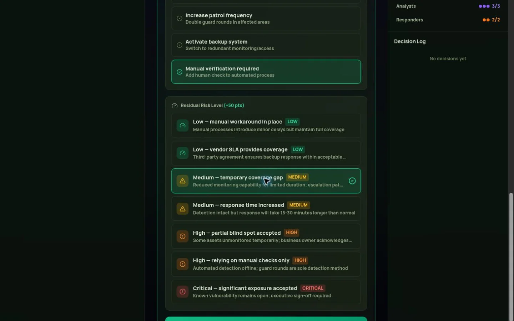
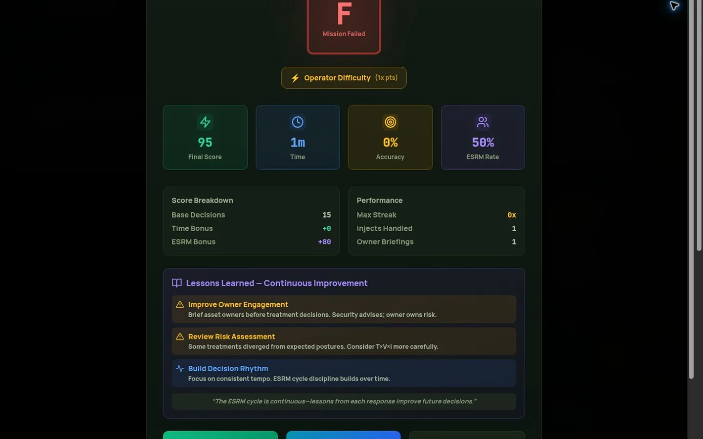

EXECUTIVE SUMMARY
Hourglass Command is an independent, synthetic training simulation for first-hour security decisions. I set its product direction and developed it through AI-assisted design and engineering, drawing on a security-operations perspective. Learners assess converging reports, recommend an operating posture, document treatment and ownership, and inspect an after-action record. The public app and source make that workflow observable. They do not establish improved real-world outcomes or validated leadership assessment. The project’s value is an inspectable decision practice: a way to explore how assumptions, governance, and changing information shape a recommendation, within clearly stated training boundaries.
A first hour with imperfect information
A stream of alarms does not produce a decision by itself. Someone must decide which reports matter, what remains unknown, which activity can continue, and who is accountable for the remaining risk. Hourglass Command explores that problem through a fictional security operation. The intended learner is a practitioner who wants to rehearse a structured decision and then inspect the reasoning behind it.
The project constrains the experience to a manageable training session. It does not attempt to reproduce an employer’s environment or integrate operational systems. Synthetic scenarios let a learner revisit the same situation, compare different choices, and examine consequences without involving real facilities, personnel, or incident data. That boundary is part of the product’s usefulness.
My contribution and the role of AI
I set the problem, product direction, and security-operations perspective for this independent portfolio project. The design and software were developed through AI-assisted iteration. The public repository contains the implementation, scenario material, training methodology, and revision history. This distinction matters: the work demonstrates a product I directed and developed with AI assistance, not a claim that I manually authored every line of code or independently validated every training assumption.
My GSOC responsibilities inform the questions the project asks: how to separate facts from assumptions, establish reliable handoffs, explain a recommendation, and keep risk ownership visible. The simulation itself is separate from that professional experience. It does not contain employer playbooks or establish that its scoring predicts workplace performance.
Three decisions that shape the product
01 / Commit a posture, then expose the reasoning
Implemented choice. The learner recommends CONTINUE, DEGRADE, or PAUSE, with treatment, rationale, ownership, and residual risk. A plausible alternative is an entirely open-ended narrative exercise. Another is a quiz with a single preselected correct answer. The implementation uses an explicit posture to make the decision inspectable while preserving space for its explanation.
Tradeoff. A small set of postures reduces ambiguity in the interface, but cannot capture every operational nuance. A DEGRADE choice, for example, is meaningful only when its compensating treatment is credible. The explanation must carry that detail. This comparison describes the present design rationale, not a claim of a documented historical experiment between prototypes.
Evidence and revision trigger. The live decision panel and core decision rules expose how inputs are represented. Core automated tests check encoded behavior, not whether the behavior is pedagogically sufficient. I would revisit the structure if observed learners consistently need exceptions that the posture model obscures, or if they can earn a strong result with reasoning a practitioner would reject.
02 / Put the advisor and the asset owner in the same decision
Implemented choice. The interface distinguishes a security recommendation from asset-owner risk acceptance. It makes treatment and residual risk part of the workflow. The simpler alternative would let the person operating the simulation make an apparently final business decision without an explicit owner. That would be faster, but would hide an important governance question.
Tradeoff. Requiring a handoff adds friction. It can feel repetitive once the learner understands the principle. The benefit is that ownership becomes something the learner practices rather than a statement confined to the methodology. The ASIS account of ESRM roles provides the public conceptual basis for that distinction.
Evidence and revision trigger. The training documentation maps the advisor-to-owner workflow to explicit mechanics. The decision record lets a reviewer inspect what was entered. I would change the interaction if a structured learner review found that people mistake a simulated affirmation for actual executive negotiation, or if the handoff obscures rather than clarifies accountability.
03 / Make reflection portable and the sensory layer optional
Implemented choice. A decision trail and after-action export preserve the session for review. Optional spoken information and a 3D operating picture support the experience. A purely cinematic simulation could emphasize immersion; a text-only worksheet could reduce technical demands. This product combines a working interface with an inspectable record, while keeping its training scope explicit.
Tradeoff. Rich presentation adds accessibility, memory, and browser-compatibility work. Optional local voice models are especially demanding. The September 2026 first-enable repair introduced quantized model loading, memory-pressure checks, and fallback behavior. That repair is evidence of an engineering constraint, not proof that every device can support the feature.
Evidence and revision trigger. The source contains dedicated voice-load policy tests, and the revision linked below records the first-enable change. The portfolio never loads the simulation or its voice models in the background. I would simplify the sensory layer further if device testing shows that it competes with reading, makes controls harder to reach, or materially reduces session reliability.
A session you can inspect
Start with the campaign for a guided progression, or use free play to select a scenario. Read the available reports and establish the common operating picture. Distinguish facts, assumptions, and unknowns before selecting a posture. Record the treatment and reasoning, identify the appropriate owner, and revisit the recommendation as the scenario develops.
The after-action review makes the path through the session visible. It can support discussion about what was known at a particular point, why an action was taken, and what should change next time. The captures below come from the real public application. This written walkthrough remains available if the live application cannot run on your device.
What the project establishes—and what remains open
The observable result is a working, publicly inspectable training product. It includes a six-chapter campaign, free play, posture decisions, local progress, and after-action documentation. The repository’s automated checks exercise its implementation. None of that establishes a measured improvement in real-world incident outcomes or proves that its scoring is a validated assessment of leadership ability.
The simulation does not reproduce workforce management, negotiation, executive relationships, stakeholder politics, or the consequences of real operational authority. It is unsuitable as a production incident system or an organizational system of record. All environments and incidents are synthetic. No employer deployment or endorsement is claimed.
The next substantive validation is a facilitated learner review: compare the recorded reasoning with practitioner feedback, observe where users misunderstand ownership, and identify whether presentation helps them notice the relevant facts. That is a question for evaluation, not a result to imply through branding.


Dated source evidence
Source reviewed: revision 82e170f, 6 September 2026. See the training methodology, voice-load policy tests, and current automated checks. Results apply to their recorded revision and environment.
Optional voice
The app’s optional headset mode may download substantial local model files and request microphone access. Start with the standard interface; enable voice only if you want it. No app, microphone, or model is loaded by this portfolio.